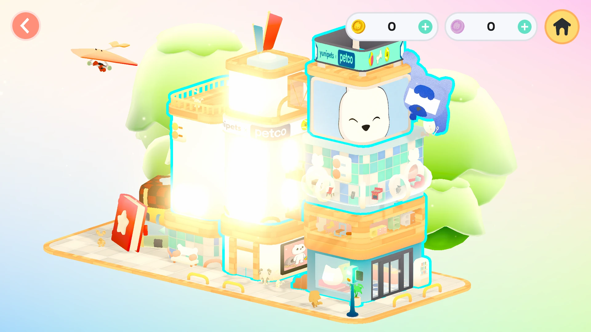
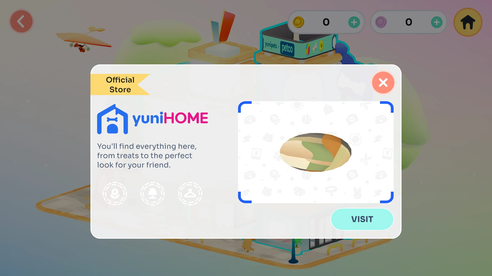
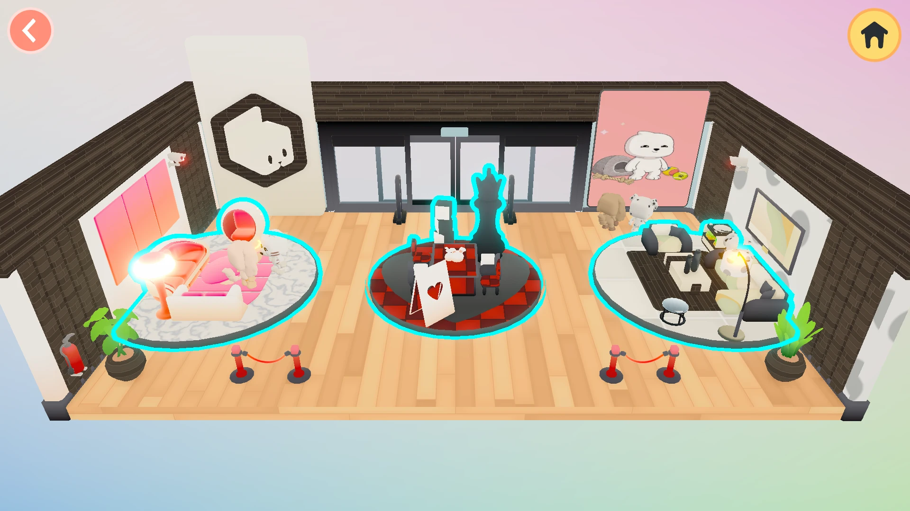
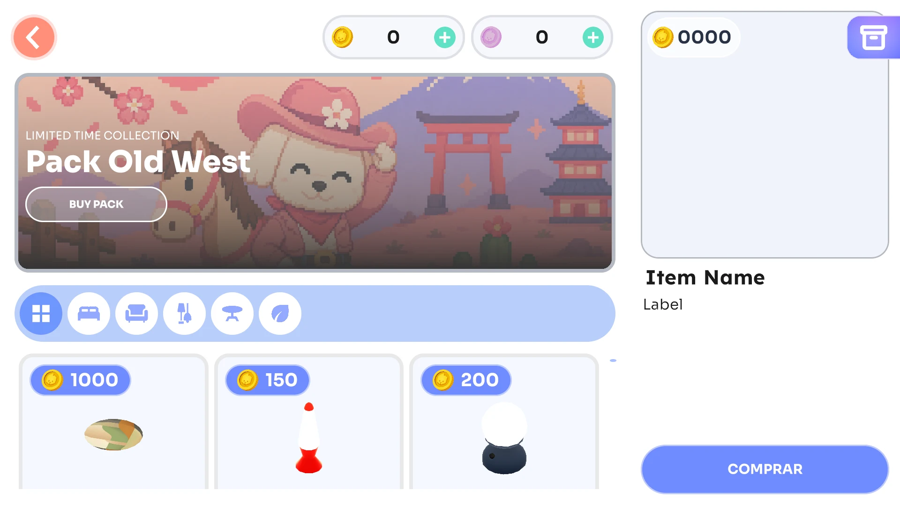
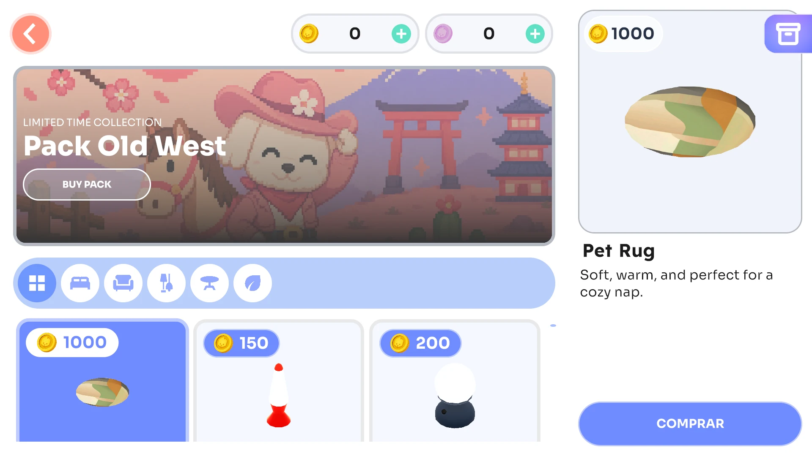

Próximo rediseño
Tienda
Empezaremos a rehacer la tienda desde cero. Queremos que sea más fácil encontrar lo que buscas y que puedas pasar con fluidez de explorar el catálogo a ver de cerca un artículo y seguir descubriendo otros.
Del mapa a la ficha de un mueble
Estas capturas de Unity muestran la versión anterior de la tienda. Al igual que en el resto del juego, la interfaz sigue en desarrollo. Toca una imagen para ampliarla.

Elegir la tienda en el mapa
Desde el mapa podías tocar el edificio de la tienda de muebles.

Entrar a yuniHOME
Antes de entrar se abría una ficha con el nombre de la tienda y una muestra de sus productos. El botón «Visit» te llevaba al local.

Tocar un expositor
Dentro del local había tres grupos de muebles con el borde iluminado. Al tocar uno se abría el catálogo.

Explorar el catálogo
La colección destacada aparecía arriba. Debajo estaban los filtros por tipo de mueble y los artículos con su precio en Yunicoins.

Ver un artículo de cerca
Al elegir Pet Rug, su tarjeta quedaba resaltada. En el panel derecho aparecían la alfombra, su descripción y el precio de 1,000 Yunicoins junto al botón «Comprar».